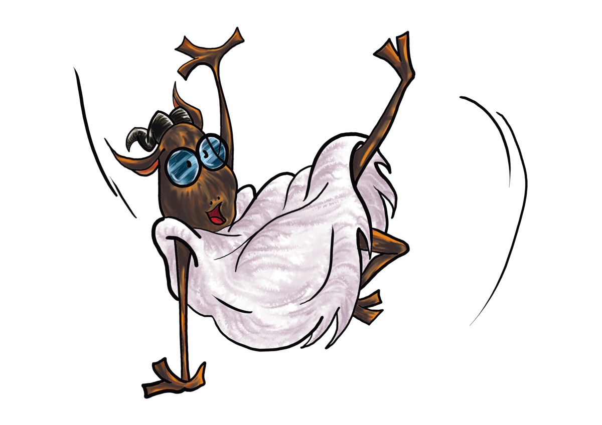

En cada partido, dos equipos se enfrentan resolviendo tres problemas matemáticos. Cada problema se puntúa sobre 5, y quien sume más puntos gana el enfrentamiento.

Los equipos se dividiran en uno o varios grupos y dentro de cada uno los equipos se enfrentaran por los primeros puestos. Los equipos que obtengan más puntos de partido una vez disputadas todas las jornadas clasificarán a la gran final de la Liga Matemática de Institutos.
El calendario completo de enfrentamientos se fija antes del comienzo de la Liga. Además, se procurará ofrecer un taller semanal de matemáticas vinculado a la competición y materiales para preparar las jornadas. Los talleres se celebran los miércoles y las competiciones, los sábados.
Los partidos de la Liga funcionan con una doble puntuación: los puntos de problema deciden quién gana cada enfrentamiento y los puntos de partido deciden la clasificación.
Cada problema de la jornada se valora de 0 a 5 puntos, atendiendo a la corrección y al razonamiento de la solución. Con tres problemas, cada equipo puede alcanzar hasta 15 puntos en un partido.
Se suman los puntos de problema de cada equipo. El que más puntos consigue gana el enfrentamiento; si ambos suman lo mismo, el partido termina en empate.
Como en una liga de fútbol: ganar suma 3 puntos, empatar 1 punto y perder 0. El equipo con más puntos de partido al final gana la Liga.
Cada equipo está integrado por sus jugadores y por un delegado, que es su máximo responsable. El delegado se elige entre los miembros del equipo, lo representa ante EHULER y presenta las reclamaciones que considere oportunas. También puede ser jugador.
Los problemas giran en torno a tres grandes bloques, con dificultad creciente dentro de cada jornada.
Nociones básicas de aritmética, sistemas de conteo, divisibilidad, sistemas de ecuaciones lineales, traslado de problemas reales a sistemas de ecuaciones, polinomios, igualdades y desigualdades.
Funciones, sucesiones de números, estudios de frecuencia y sistematización de resoluciones.
Teoremas de Tales y Pitágoras, sistemas analíticos de representación de figuras, áreas, longitudes, relaciones trigonométricas y teoremas elementales de geometría.
Si dos o más equipos quedan empatados a puntos de partido, su posición se determina aplicando sucesivamente estos criterios.
| Orden | Criterio |
|---|---|
| a | Mayor diferencia entre los puntos de problema obtenidos por el equipo durante la Liga y los obtenidos por sus rivales en los enfrentamientos contra ese equipo. |
| b | Mayor número total de puntos de problema obtenidos. |
| c | Resultado del enfrentamiento directo, cuando el empate sea únicamente entre dos equipos. |
| d | Menor número de faltas muy graves. |
| e | Menor número de faltas graves. |
| f | Menor número de faltas leves. |
| g | Si el orden resulta decisivo, enfrentamiento adicional entre los equipos que continúen empatados; si no es trascendental, orden alfabético del nombre del equipo (no del centro). |
El equipo campeón disputa la Supercopa EHULER frente al ganador de la Olimpiada Matemática de Institutos de Álava.
Ver el calendario